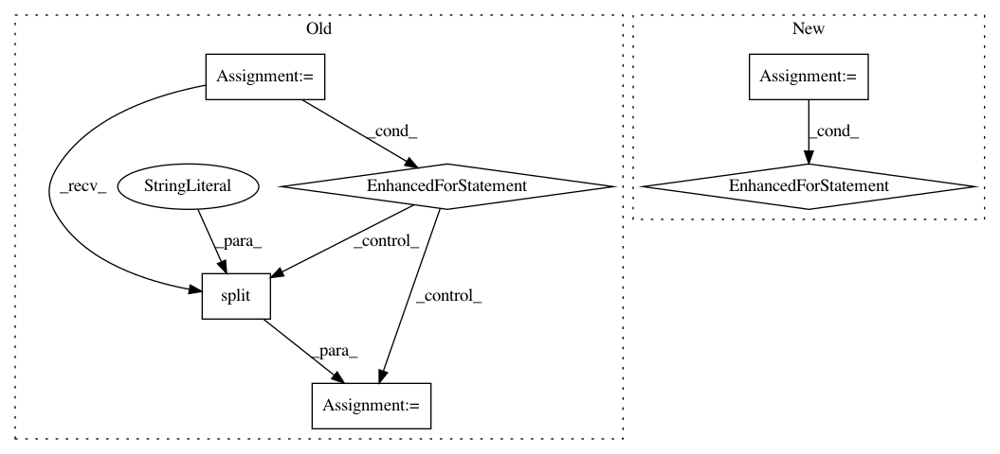

50837ed17dbd9e74af2f01a3255cf3148ead1f4a,sklearn/sklearn-template/template/trainer/utils.py,,read_df_from_gcs,#,79
Before Change
df_list = []
// Use "application default credentials"
storage_client = storage.Client()
// Parse bucket name and file pattern
parse_result = urlparse(file_pattern)
file_pattern = parse_result.path
bucket_name = parse_result.hostname
bucket = storage_client.get_bucket(bucket_name)
// Find all the files match the provided pattern
blobs = bucket.list_blobs(prefix=file_pattern)
for blob in blobs:
file_path = temp_folder + blob.name.split("/")[-1]
blob.download_to_filename(file_path)
// Assume there is no header
df_list.append(pd.read_csv(file_path, header=None))
// TODO: Can remove after download to save space
data_df = pd.concat(df_list)
return data_df
After Change
// Download the files to local /tmp/ foler
df_list = []
for file in gfile.Glob(file_pattern):
with gfile.Open(file, "r") as f:
// Assume there is no header
df_list.append(pd.read_csv(f, header=None))
data_df = pd.concat(df_list)
return data_df
In pattern: SUPERPATTERN
Frequency: 3
Non-data size: 6
Instances
Project Name: GoogleCloudPlatform/cloudml-samples
Commit Name: 50837ed17dbd9e74af2f01a3255cf3148ead1f4a
Time: 2019-04-03
Author: luoshixin@google.com
File Name: sklearn/sklearn-template/template/trainer/utils.py
Class Name:
Method Name: read_df_from_gcs
Project Name: commonsense/conceptnet5
Commit Name: 6b3c362cc85fc4fbd4a972954a39b39404950b14
Time: 2017-03-07
Author: joanna.teresa.duda@gmail.com
File Name: conceptnet5/vectors/evaluation/wordsim.py
Class Name:
Method Name: evaluate_semeval_crosslingual_global
Project Name: tensorflow/models
Commit Name: fa15ed1eb316adff041904380930f39452a761f6
Time: 2021-01-20
Author: syazdani@google.com
File Name: research/object_detection/model_lib.py
Class Name:
Method Name: continuous_eval